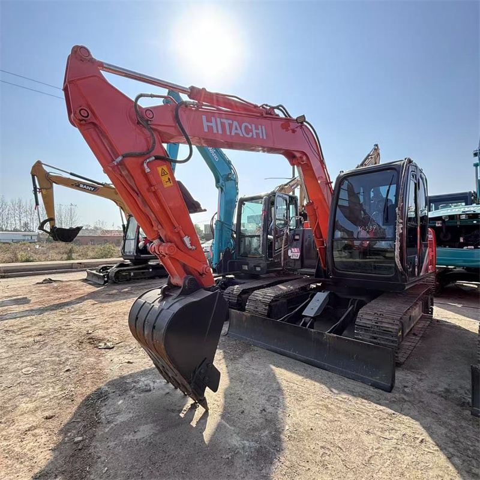

Refurbished Hitachi Zaxis 130 Excavator
The Hitachi Zaxis 130 Excavator is a compact and versatile machine, offering exceptional performance in a wide range of applications such as construction, landscaping, and demolition. Its excellent fuel efficiency, precise hydraulic control, and reliable performance make it a top choice for businesses that need power in a compact form. When refurbished, the Zaxis 130 continues to provide all the advantages of a new unit, but at a much more affordable price, making it an ideal investment for businesses with budget considerations.
Honestly, it's almost impossible to buy a brand new excavator from China. They either don't exist or are made in China. If a Chinese seller tells you their Caterpillar/Komatsu/Volvo/Kobelco/Hitachi is brand new, they're lying. Therefore, a refurbished excavator is your best bet.

Here are the detailed specifications for a refurbished Hitachi Zaxis 130 excavator (ZX130-6):
Operating Weight and Dimensions
- Operating Weight: ~12,700 kg (28,000 lbs)
- Transport Length: ~7.7 meters
- Transport Width: ~2.49 meters
- Transport Height: ~2.85 meters
- Tail Swing Radius: ~2.2–2.4 meters
- Track Width: 500 mm standard
- Undercarriage: Long carriage (LC) configuration
Engine and Powertrain
- Engine Model: Isuzu AR-4JJ1X (Tier 4 Final / Stage V compliant)
- Rated Power Output: ~72 kW (97 hp) @ 2,000 rpm
- Fuel Tank Capacity: ~250 liters
- Travel Speed: ~3.5–5.5 km/h
- Swing Speed: ~11 rpm
- Drive Type: Hydrostatic with planetary final drives
Hydraulic System
- Main Pump Type: Load-sensing axial piston pumps
- Flow Rate: ~2 × 160–180 L/min
- System Pressure: Up to 34.3 MPa
- Hydraulic Oil Capacity: ~200–250 liters
- Efficiency Features:
- Boom regenerative circuit
- Swing priority valve
- Auto hydraulic warm-up
Performance Metrics
- Bucket Capacity: ~0.5–0.7 m³ (SAE heaped)
- Max Digging Depth: ~6.03 meters
- Max Reach (Horizontal): ~8.65 meters
- Max Dump Height: ~6.5 meters
- Bucket Digging Force: ~95–105 kN
- Arm Digging Force: ~70–80 kN
Cab and Operator Features
- Cab Type: ROPS/FOPS certified
- Display: Multifunctional LCD monitor with diagnostics and ECO gauge
- Controls: Pilot-operated joysticks with auxiliary hydraulic circuit
- Comfort: Adjustable seat, HVAC, low-noise cab
- Visibility: Wide glass area, LED work lights, optional rear-view camera
Attachments Compatibility
- Standard Bucket: ~0.6 m³
- Optional Tools: Hydraulic breaker, demolition shear, ripper, compactor
- Quick Coupler: Hydraulic or manual quick hitch
Refurbishment Scope
Refurbished ZX130 units typically include:
- Engine Overhaul: Turbocharger, injectors, cooling system
- Hydraulic Restoration: Pump recalibration, valve block testing, hose replacement
- Electrical Diagnostics: Monitor, sensors, wiring harness
- Cab Reconditioning: Seat, joysticks, HVAC, repainting
- Structural Repairs: Boom/bucket welding, bushing replacement, undercarriage rebuild
Overview of the Hitachi Zaxis 130 Excavator
The Hitachi Zaxis 130 is a tracked hydraulic excavator designed for a variety of light to medium-duty tasks. Its compact design allows it to operate in tight spaces where larger machines may not fit, making it ideal for urban construction, roadwork, landscaping, and other similar applications. Despite its smaller size, the Zaxis 130 packs a punch, delivering excellent digging and lifting capabilities.
A refurbished Zaxis 130 undergoes a comprehensive reconditioning process, including replacing worn-out parts and restoring the machine to factory specifications using genuine Hitachi components. This ensures that businesses can get a machine with the same reliability and performance as a new one but at a fraction of the cost.
Key Specifications of the Hitachi Zaxis 130 Excavator
The Zaxis 130 is designed to provide maximum performance with a compact size, making it ideal for tight workspaces. Here are the key specifications:
-
Operating Weight: Approximately 12,500 - 14,000 kg (27,558 - 30,865 lbs)
-
Engine Power: 92 hp (69 kW)
-
Max Digging Depth: Up to 5.2 meters (17.1 feet)
-
Maximum Reach: 7.9 meters (25.9 feet)
-
Bucket Capacity: Typically 0.5 - 0.8 cubic meters (17 - 28 cubic feet)
-
Fuel Tank Capacity: Around 180 - 200 liters (48 - 53 gallons)
-
Travel Speed: Up to 5.5 km/h (3.4 mph)
These specifications give the Zaxis 130 the versatility to perform a variety of tasks efficiently while keeping fuel consumption and maintenance costs to a minimum.
Performance and Efficiency of the Zaxis 130
The Hitachi Zaxis 130 is engineered for both performance and fuel efficiency, making it a powerful yet economical option for businesses. Its hydraulic system provides precise control, while its efficient engine ensures that fuel consumption is kept low.
Performance Highlights:
-
Efficient Hydraulic System: The Zaxis 130’s hydraulic system is designed for precise, smooth control of the boom, arm, and bucket. This makes it ideal for tasks that require accuracy, such as grading, digging, and material handling.
-
Fuel Efficiency: The Zaxis 130’s engine is optimized for fuel efficiency, helping businesses reduce operational costs without compromising on performance. This feature is particularly beneficial for contractors looking to minimize fuel expenses on long-duration projects.
-
Digging and Lifting Power: Despite its compact size, the Zaxis 130 offers impressive digging depth and reach, allowing it to handle various tasks such as trenching, digging, and lifting heavy materials. The powerful hydraulic system ensures that the machine performs well even in demanding conditions.
-
Responsive Control: Operators will appreciate the Zaxis 130’s responsive controls and smooth operation. Its ease of use allows operators to perform tasks with precision, improving overall productivity and minimizing errors.
Durability and Longevity of the Zaxis 130
The Hitachi Zaxis 130 is built with durability in mind, ensuring that it can withstand tough working conditions and continue to perform reliably for many years.
Durability Features:
-
Strong Undercarriage: The undercarriage of the Zaxis 130 is designed to handle rough terrain and heavy workloads. Its tracks, rollers, and sprockets are built for extended wear, ensuring smooth operation even in uneven or difficult terrain.
-
Reliable Engine: Powered by a durable engine, the Zaxis 130 is designed for long-term performance. With proper care and maintenance, the engine can provide thousands of hours of reliable service, making the machine a valuable asset for businesses.
-
Rugged Hydraulic System: The hydraulic system of the Zaxis 130 is designed for high-pressure performance, allowing it to handle demanding tasks without compromising reliability. The machine’s hydraulic components are engineered to last, minimizing downtime and maintenance costs.
Comfort and Safety of the Zaxis 130
The Zaxis 130 is designed with operator comfort and safety in mind. The machine comes equipped with an ergonomic cabin that offers excellent visibility and a smooth, quiet operating environment, which helps reduce fatigue during long hours of operation.
Comfort and Safety Features:
-
Ergonomic Cabin: The Zaxis 130 features a spacious and ergonomic cabin designed to maximize operator comfort. The adjustable seat, user-friendly controls, and ample legroom reduce fatigue, even during long shifts.
-
Noise and Vibration Reduction: The cabin is equipped with noise and vibration reduction features, making it a more comfortable environment for operators. This feature is particularly useful during extended hours of operation, as it helps reduce stress and improves focus.
-
Safety Features: The Zaxis 130 is equipped with Roll Over Protection (ROPS) and Falling Object Protection (FOPS) to protect the operator in hazardous work environments. Additionally, the machine’s low center of gravity enhances stability, particularly when working on uneven ground.
Versatility and Attachments for the Zaxis 130
The Hitachi Zaxis 130 is a highly versatile machine that can be fitted with a wide range of attachments, making it suitable for a variety of tasks. Whether you need to dig, lift, grade, or demolish, the Zaxis 130 can adapt to meet the demands of the job.
Common Attachments for the Zaxis 130:
-
Buckets: The Zaxis 130 can be equipped with general-purpose, heavy-duty, or grading buckets. These typically range from 0.5 to 0.8 cubic meters (17 - 28 cubic feet) in capacity, making them ideal for a wide range of excavation, grading, and material handling tasks.
-
Hydraulic Breakers: For demolition tasks, the Zaxis 130 can be equipped with a hydraulic breaker, enabling it to break through concrete, rock, and other hard materials with ease.
-
Augers: Auger attachments are perfect for drilling deep, narrow holes for foundations, posts, or other applications requiring precision.
-
Grapples: The Zaxis 130 can be fitted with grapple attachments for handling materials such as logs, scrap metal, and debris.
-
Quick Couplers: Quick couplers allow operators to easily change attachments without leaving the cabin, minimizing downtime and boosting productivity.
Benefits of Purchasing a Refurbished Hitachi Zaxis 130 Excavator
Opting for a refurbished Zaxis 130 offers businesses a number of advantages, particularly for those looking to reduce equipment costs without sacrificing quality.
Key Benefits:
-
Cost Savings: Refurbished Zaxis 130 units are significantly more affordable than new models. Businesses can get a high-quality machine at a fraction of the price, allowing them to allocate funds elsewhere.
-
Thorough Reconditioning: Refurbished units undergo a detailed inspection and reconditioning process, where worn parts are replaced with genuine Hitachi components. This ensures the machine performs like new and meets factory standards.
-
Warranty: Many refurbished Zaxis 130 excavators come with a warranty, giving businesses peace of mind in case of unexpected issues. This warranty ensures that the machine will continue to operate smoothly after purchase.
-
Sustainability: Purchasing refurbished equipment is an environmentally friendly choice. It helps reduce waste and extend the life of existing machinery, contributing to a more sustainable construction industry.
Maintenance Tips for the Hitachi Zaxis 130 Excavator
Regular maintenance is essential to keep the Zaxis 130 running efficiently and extend its lifespan. Here are some key maintenance tips:
Maintenance Recommendations:
-
Engine Maintenance: Regularly check engine oil, replace air filters, and monitor coolant levels to keep the engine running smoothly and avoid overheating.
-
Hydraulic System: Inspect hydraulic hoses for leaks and replace hydraulic filters as needed. Maintaining a clean hydraulic system ensures optimal performance.
-
Undercarriage: Check the undercarriage, including tracks and sprockets, for wear. Timely replacement of worn components helps avoid more extensive damage.
-
Attachments: Regularly inspect attachments for wear and tear. Replace or repair damaged parts to maintain efficiency and performance.
Conclusion
The Hitachi Zaxis 130 Excavator is a compact yet powerful machine that offers exceptional performance, fuel efficiency, and durability. Purchasing a refurbished Zaxis 130 provides businesses with an affordable option for high-quality equipment that performs like new. With regular maintenance, the Zaxis 130 can continue to serve operators for many years, making it a great investment for businesses in construction, landscaping, and other industries requiring compact, versatile equipment.
Our Commitment
- 2 years / 4000 hours warranty.
- EPA certified.
- No sweatshop labor.
Contacts

- [email protected]
- Youtube Instagram Facebook
- Navigation: G206 (Sishu Bridge) in Changfeng County, Hefei City, Anhui Province, 200 meters north to the east